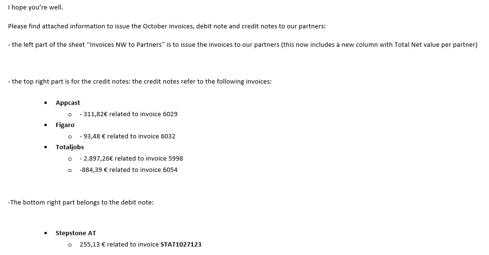

Closing Procedure
Closing is done on 1st working day of every month, in the morning.
To perfrom a successful closing, you should follow these steps:
1. Check POs
- Make sure that all IN POs are Validated or Deleted and that there aren’t any “Rejected POs”
- In case of IN POs in status “To Validate”, please check with the CS person in charge. Probably he/she is waiting for confirmation or more information in order to validate or delete the PO
- In case of “Rejected POs” (IN or OUT), please check with the CS person in charge. All rejected POs have to be solved before the closing
- If no solution is found before the closing, the last-moment solution is to inform all parts of the situation and proceed with the deletion if all POs affected. These POs will be issued again asap and invoiced in the next month. We need to be careful to always have the approval of both parts before any action is taken as our decisions will affect the partners’ forecast
- Important! Please use the report “POs to Validate or Delete” in “The Network” folder to check on all the POs as POs without a PO Line Item will not be showing on the first page of Salesforce to action
2. Create a Closing Folder in the Pool
- In the pool, go to the current year, and create a new folder with the name of the month we are closing (ie “9 September 2022”)
3. Create a report for SGO
- To create a closing file for SGO you will need to set your locale in “French (Belgium)” before generating the report
- In Salesforce click on your name on the top right corner then “My Settings”.
- Open the “Personal” tab on the left side then click on “Language & Time Zone”.
- As Locale select “French (Belgium)” then save
- Go to reports "IST Value Files report":
- In the filters choose “Last month”
- Click export and select 'Details only'
- Select the time range as last month and export the report as “Unicode (UTF8)” in excel format
- Place the report in your newly created folder in the Pool for last month and rename the file “Closing Info September 2019 StepStone Group”
- Send the file to SGO
- FYI – Stepstone Group jobboards are: Appcast, CareerJunction, Caribbeanjobs, Irishjobs, Jobs.ie, Jobs.lu, NIJobs, StepStone AT, StepStone BE, StepStone DE, StepStone NL, Tecoloco & Totaljobs
4. Extract the closing file
- Keep your Locale in “French (Belgium)”
- Open the Reports tab in Salesforce and select the report called “Closing File” in “The Network” folder
- Check it is indeed set for the month we are closing then export the report as “Unicode (UTF8)” in excel format
- Place it in your newly created folder in the Pool and rename it “Closing File September 2019”
5. Update the closing file
- Go to the folder where the closing of the previous month has been done (ie: P:\_ The Network\NETWORK TEAM\FINANCE\INFO FOR NETWORK & STEPSTONE INVOICES\2019\8 August 2019)
- Copy the file “20190831_Invoice information” and paste it in the folder we are working on related to September
- Rename it into last day of the month of closing (ie, 20190930_Invoice information)
- Unhide the followiing sheets:
- StepStone to Network
- Network to StepStone
- Report
- Open the file “Closing file September”, Copy only the data (not the headers) and paste it in data (only number) into the last line of the “report” sheet of the Invoice information
- Check column by column if the info matches
- Check that the column “S” has “CN/INV” correctly (CN should have the negative amount)
- In the month column write the date of the first of the month in question in format 01/09/2019. Repeat for the whole column of data you just pasted
- Refresh of the closing sheets: go to sheet “invoices from Network to partners”. Click right mouse on a pivot table and click on “refresh”
- Update the month in all the pivot tables of all the sheets we have
- Check and make sure all the months are updated. One by one, take the time to do this. This is a very common thing to forget!
- In the first sheet (“invoices from Network to partners”), check if all partners are “clicked” (selected) in the pivot table (check both invoice and credit note table)
- Update format of column D (apply Format painter of column C)
- Hide sheet “report”
6. Check the figures with SGO
- SGO is also doing the closing on their side with the report we have sent them. Once both parts are ready, we need to check if the figures are correct and matching
- Contact SGO to inform them that the closing is done
- When ready, check with SGO country by country (they just send an overview of all numbers and we compare them)
- All StepStone job boards will have to be checked both in the sheet Invoices Network to StepStone and StepStone to Network
7. Send the closing file to our accountant (Bastian)
- Take the last closing email we sent to Bastian (in the Finance mailbox)
- Update the info:
- In the subject - update the month
- In the body of the email - update the month
- Include the info related to the credit notes we need him to issue
- You can find this information in the closing file, in sheet "Invoices from Network to partners". In the second part of this sheet (top right), there is a pivot table with the CN (credit notes):
- Copy the IN PO reference
- Check the comments of the PO in SF
- Select the original IN PO reference from the comment and check in which month it was issued
- Go to the folder “INVOICES FROM NETWORK TO PARTNERS” in Network Team / Finance and to the current year (the path to the folder is here) and open the current year and the the folder of the month corresponding to the month the original PO was issued
- Check the invoice reference
- Go back to the email and under the partner name, include the amount of the PO in the CN pivot table and the invoice reference
- Include the info related to the debit notes we need him to issue (usually only StSt countries and Turkey)
- You can find this information in the closing file, in sheet "Invoices from Network to partners". In the second part of this sheet (down right), there is a pivot table with the DN (debit notes):
- Copy the OUT PO reference
- Check and copy the invoice reference
- Go back to the email and under the partner name, include the amount of the of the PO in the DN pivot table and the invoice reference
- See an example of the email to Bastian: 
- Attach the 'Invoice information' file to the email (in the folder there are 3 documents - Closing file, Closing file SGO and Invoice Information)
- Go through the check list one more time before sneding the email to Bastian